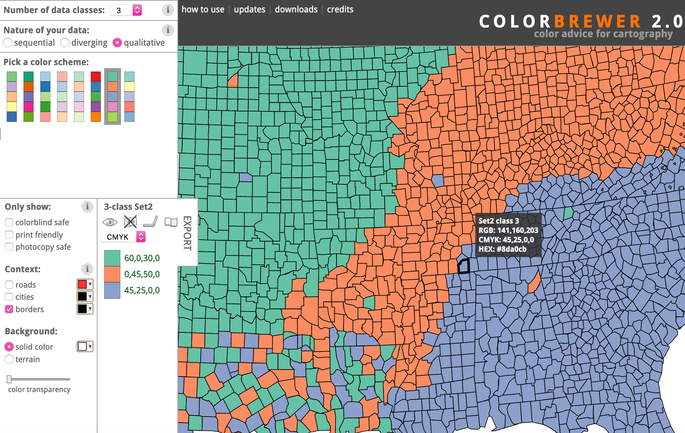
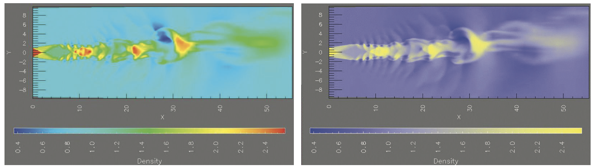

Color
IIC2026
Colormaps
Color
IIC2026
Colormaps
Asociación entre datos y colores.
Colormaps
Asociación entre datos y colores.
- Categóricos
-
Ordenados:
- Secuenciales
- Divergentes
Colormaps continuos
Colormaps segmentados
Colormaps continuos

(Fuente color maps: D3 Scale Chromatic)
Colormaps segmentados
Colormaps continuos
(Fuente color maps: D3 Scale Chromatic)
Colormaps segmentados

(Fuente color maps: D3 Scale Chromatic)
Colormaps categóricos

(Fuente color maps: D3 Scale Chromatic )
- También conocidos como cualitativos.
- Usan color para codificar categorías y agrupaciones.
- Suelen ser segmentados al mismo tiempo.
Buscar referencias de colormaps

(Fuente imagen: Color Brewer )
Colormaps ordenados
Rango de colores ordenados en algún sentido.
Colormaps secuenciales

(Fuente color maps: D3 Scale Chromatic )

(Fuente color maps: D3 Scale Chromatic )
Colormaps divergentes

(Fuente color maps: D3 Scale Chromatic)
(Fuente color maps: D3 Scale Chromatic)
Matices en colormaps ordenados

(Fuente: Libro "Visualization, Analysis and Design")
Colormaps en D3.js
d3-colord3-scale-chromaticd3.interpolateLabd3-hsluv
Daltonismo
Alteración de origen genético que afecta a la capacidad de distinguir los colores.
Daltonismo
Alteración de origen genético que afecta a la capacidad de distinguir los colores.
- Diseñar no solo con matiz, si no con saturación y luminosidad.
- Simular efectos de daltonismo sobre elecciones y reconocer efectividad.